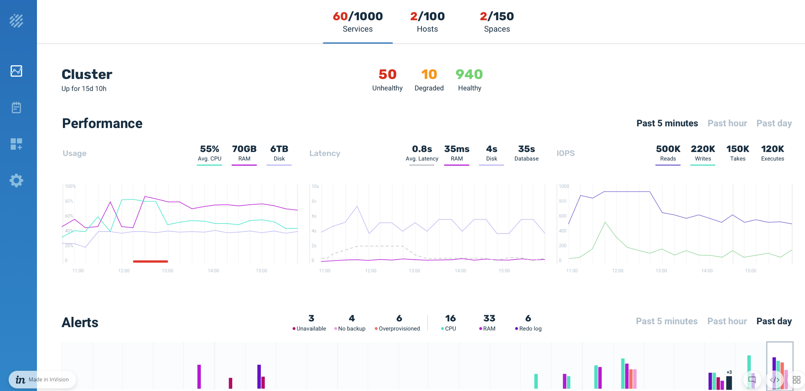

Deploying Platforms on Amazon EKS
This topic explains how to deploy KubeGrid using the Amazon Elastic Container Service for Kubernetes (Amazon EKS).
Deploying involves the same tasks as deploying the data grid. The deployment tasks described below use insightedge Helm charts. However, you can also perform these tasks using the xap Helm charts (except for Apache Zeppelin, which is part of the deployment).
Deploying an Amazon EKS Cluster
To deploy an Amazon EKS cluster, follow the instructions in the Getting Started with Amazon EKS section of the AWS user guide. The deployment process requires that you do the following:
-
Create an AWS account.
-
Create a KubeGrid (for example, ) Amazon EKS Service role. This user role will need sufficient security policies to administer the Amazon EKS cluster.
-
Create the Amazon EKS Cluster VPC for KubeGrid. Note that you will have to create both a cluster stack and a worker node stack in AWS CloudFormation.
-
Install and configure kubectl for Amazon EKS. This is the tool you will use to perform administration tasks on your Kubernetes cluster.
-
Download and install the latest AWS CL. (This is an optional step but strongly recommended.)
Deploying KubeGrid in Amazon EKS
This page provides general information on how to deploy KubeGrid in a Kubernetes cluster. For detailed installation and configuration instructions, see Getting Started with GigaSpaces in Kubernetes Using Helm ChartsGetting Started with GigaSpaces in Kubernetes Using Helm Charts and Operator.
Prerequisites
Before deploying KubeGrid, ensure that you have the following installed:
-
kubectl
-
Helm
You must use Helm 2 with KubeGrid. Helm 3 contains a new chart version, which is a breaking change and is not currently supported by KubeGrid.
Use the following command to fetch the GigaSpaces Helm charts and unpack them locally:
helm fetch gigaspaces/insightedge --version= --untar
helm pull gigaspaces/insightedge --version= --untar
helm fetch gigaspaces/insightedge --version= --untar
You should also verify that your KubeGrid EKS cluster is active using the Amazon EKS console, and that the KubeGrid and worker nodes were created using the CloudFormation console.
Installing KubeGrid
Installing KubeGrid is a simple one-step procedure.
In order to ensure that will work properly in the Amazon EKS environment, the default service type (NodePort) in the manager and zeppelin Helm charts must be changed to LoadBalancer before applying the Helm install command.
To install in KubeGrid:
- Modify the Helm charts:
-
Open the insightedge-manager values.yaml file, and change the service type from NodePort to LoadBalancer. The chart should look like this:
# service: Platform Manager service configuration.
service:
# type: Service type.
type: LoadBalancer
- Make this same change in the
insightedge-zeppelin values.yaml file.
- Save both files.
-
Type the following command to deploy in Amazon EKS:
helm install insightedge --name demo --set pu.partitions=2,pu.ha=true
helm install demo insightedge --set pu.partitions=2,pu.ha=true
helm install insightedge --name demo --set pu.partitions=2,pu.ha=true
Verifying the KubeGrid Installation
After installing , best practice is to check that the Kubernetes services have external IP addresses, verify that is up and running, and that you can open the Apache Zeppelin web notebook.
To verify the installation:
-
Check that the Kubernetes services have external IP addresses so the pods can communicate. Type the following command:
kubectl get svc
You should see output that looks similar to this:

-
Copy the Manager IP address to a browser window and add the port number (8090). The REST Manager API screen should load.
- Perform a simple test by using one of the REST APIs, for example
GET/spaces.
-
Copy the Manager IP address to a browser window and add the port number (8090). The Ops Manager should load.

-
Copy the Zeppelin IP address into the browser window and add the port (9090). The Apache Zeppelin web notebook should load.

Deploying the Kubernetes Dashboard
The last step is deploying the Kubernetes dashboard in Amazon EKS, so you can properly administer your Kubernetes-based application. See the Amazon dashboard tutorial page for instructions.